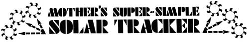

PHOTOS BY J. WEILAND
FIG. 3-A: The sun's rays warm right tank but not the left one. FIG. 3-B: As pressure builds in right tank, liquid freon is forced into left one and collector tilts in that direction. FIG. 3-C: As the collector turns more and more directly toward the sun, its left tank also begins to heat. As pressure builds in that container, it begins to accept less and less liquid freon from the right tank. Equilibrium Is achieved when the two containers are equally exposed to the sun. The system, in short, wants to automatically ""lock onto"" the sun and track it all day long.